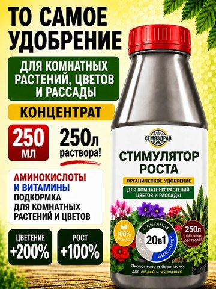
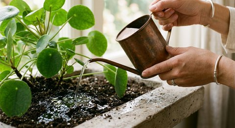
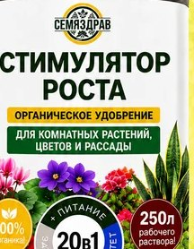
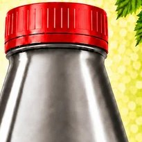

01 / ПИТАНИЕ
Сбалансированный состав
Азот, фосфор и калий в сочетании с аминокислотами, витаминами и гуминовыми веществами.
NPK + биоактивные компонентыПИТАНИЕ ДЛЯ ДОМАШНЕГО САДА
Один органический концентрат — для комнатных растений, цветов и крепкой рассады.

Комнатные растения, орхидеи и фиалки, цветы и рассада, декоративная зелень.
ПРОСТОЙ УХОД, КОТОРЫЙ РАБОТАЕТ
Растениям нужно разное. Хорошо, когда забота о каждом начинается с одного понятного решения.
Азот, фосфор и калий в сочетании с аминокислотами, витаминами и гуминовыми веществами.
NPK + биоактивные компонентыПодходит для ухода после пересадки и помогает растениям адаптироваться к новым условиям.
Для регулярной заботыОрхидеи, фиалки, фикусы, пальмы, декоративно-лиственные — и рассада тоже.
Универсальный форматИз флакона 250 мл можно приготовить до 250 литров рабочего раствора.
1 мл концентрата на 1 л воды**Расход рассчитан из указанной производителем концентрации: 250 мл на 250 л рабочего раствора. Используйте по инструкции на упаковке.

ФОРМУЛА СЕМЯЗДРАВ
Состав разработан, чтобы дать растениям комплексную поддержку в удобном жидком формате.
РАСТИТЕЛЬНЫЙ МИР ДОМА
Универсальное удобрение для цветов, зелени и рассады — используйте для полива или опрыскивания.
БЕЗ ЛИШНИХ СЛОЖНОСТЕЙ
Приготовьте раствор нужного объёма и выберите удобный способ внесения.
Остались вопросы?
Ориентир для расчёта: 1 мл концентрата на 1 литр воды.
Добавьте удобрение в воду и аккуратно перемешайте раствор.
Подходит для корневой и внекорневой подкормки растений.
Перед применением ознакомьтесь с инструкцией на упаковке. Не превышайте рекомендуемую дозировку.
МАЛЕНЬКАЯ КАПЛЯ — БОЛЬШОЙ ЗАПАС
Укажите нужный объём воды — рассчитаем количество концентрата.



Миниатюры выше — увеличенные детали того же официального слайда. Полная галерея карточки — 8 фото — на Wildberries ↗.
ЗНАКОМЬТЕСЬ — ВАШ ПОМОЩНИК
Семяздрав для комнатных растений, цветов и рассады — жидкая комплексная подкормка для полива и опрыскивания.
Откроется карточка товара. Wildberries — площадка размещения, продавец указан в карточке. Актуальную цену и наличие уточняйте там же.
Состав, продавец и документыКОРОТКО О ГЛАВНОМ
Если вашего вопроса здесь нет — загляните в инструкцию на упаковке.
Для комнатных растений, цветов и рассады. В том числе для орхидей, фиалок, фикусов, гардений и пальм.
Флакона 250 мл достаточно для приготовления до 250 литров рабочего раствора. Для расчёта дозировки учитывайте инструкцию на этикетке.
Да, удобрение предназначено для корневого внесения (полива) и внекорневого внесения (опрыскивания).
В описании продукта указан круглогодичный период применения. Частоту и нормы подкормки выбирайте по инструкции на упаковке и состоянию растения.
Нажмите «Купить на Wildberries» — откроется карточка продукта. Wildberries не является продавцом товара; данные о продавце указаны на площадке.
БАЗА ЗНАНИЙ СЕМЯЗДРАВ
Подкормки, сезонный уход и ответы на частые вопросы — в нашей библиотеке практических статей.
Все 35 статейВРЕМЯ ДЛЯ НОВЫХ ЛИСТЬЕВ
Начните с простого: немного внимания, воды и правильного питания.
Купить на WildberriesДРУЖЕСТВЕННЫЙ ПРОЕКТ
Натуральное хозяйство в верховьях Волги, Тверская область: картофель с целины, мёд со своей пасеки, столовое яйцо и мясо птицы.
Перейти на fermaruna.ru